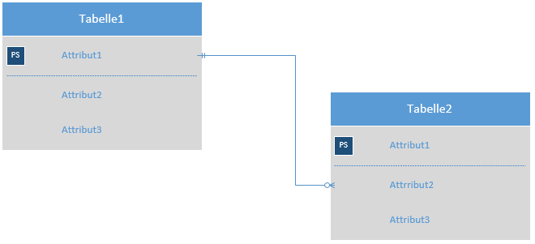
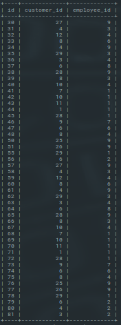
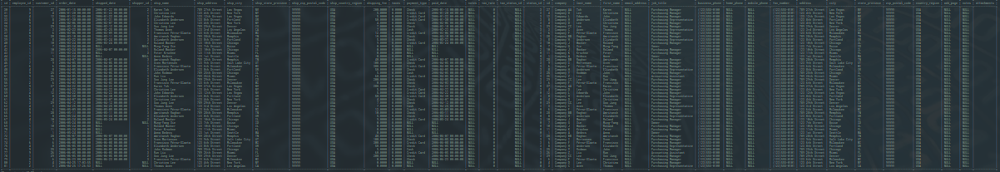
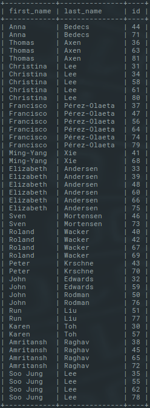
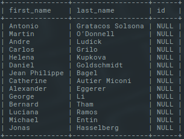
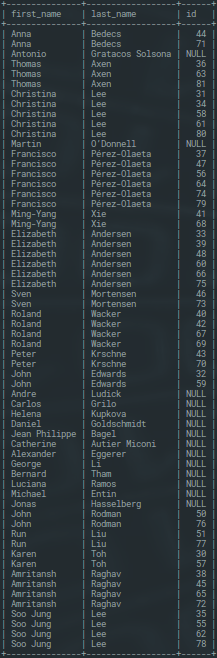
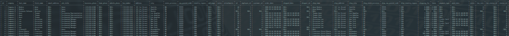

Was ist SQL?
SQL steht für Structured Query Language und mit ihr können Daten aus einer Datenbank selektiert, eintragen, aktualisiert und gelöscht werden. Zudem kann man mit SQL Datenbank-Tabellen erstellen, modifzieren und löschen. Wenn du also eine Datenbank hast und die Datenbank benutzen möchtest, brauchst du SQL.
Tabellen erklärt
Jede Datenbank hat mindestens 1 Tabelle, in der Regel aber mehr. In Tabellen, die im Datenbank-Jargon auch Entitäten genannt werden, werden Daten gespeichert und jede Tabelle gruppiert bestimmte Daten. So kann man zum Beispiel eine Tabelle “Kunden” haben, in der alle Kunden-relevanten Daten gespeichert werden. Oder man hat eine Tabelle “Produkte”, in der alle Produkte + ihre spezifischen Daten, wie Preis und Anzahl gespeichert werden.
Tabellen-Normalisierung
Ziel der Normalisierung ist eine redundanzfreie Datenspeicherung zu erstellen. Redundanzfrei bedeutet, dass Daten entfernt werden können, ohne dass es zu Informationsverlusten kommt. Tabellen zu normalisieren ist am Anfang nicht einfach, daher empfehle ich, die folgenden zwei Links erstmal durchzugehen:
- Normalisierung - super erklärt und übersichtlich anhand von schönen Beispielen
- Der Königsweg: Normalisierung - Vollständige Erklärung, ebenfalls mit Beispielen
Attribute und Datensätze
Jede Tabelle besteht aus einer Menge Spalten und Zeilen. Die Überschrift einer Spalte nennt man Attribut und die Zeilen sind ein Datensatz. Spalten sind dabei die Wert-Gruppen, während Zeilen die eigentlichen Werte beinhalten. Eine Kunden-Tabelle wird zum Beispiel folgende Attribute haben:
Name, Adresse, PLZ
Mit eingetragenen Werten sieht das ganze folgendermassen aus:
| name | adresse | plz |
|---|---|---|
| Nino Tkalec | Wagenhauserstrasse 13 | 8260 |
| Max Mustermann | Musterstrasse 5 | 8212 |
| Manuel Rahm | Schmalzgasse 10 | 8215 |
| Anna Bedecs | Musterstrasse 1 | 99999 |
| Thomas Axen | Musterstrasse 2 | 99999 |
Datenbank erstellen
mysql> CREATE DATABASE dbKunden;
Query OK, 1 row affected (0.00 sec)
Sehen wir uns den Code genauer an: "CREATE" besagt, dass wir etwas erstellen möchten. "DATABASE" sagt mysql, dass eine Datenbank erstellt werden will und "dbKunden" ist der Name der Datenbank. Dabei muss man auf die Gross- und Kleinschreibung achten. Ausserdem will man ja, dass die Zeichen so dargestellt werden sollen, wie man sie geschrieben hat. Den Zeichensatz einer Datenbank legt man folgendermassen beim Erstellen der Datenbank fest:
CREATE DATABASE Datenbank CHARACTER SET utf8 COLLATE utf8_general_ci
Tabelle erstellen
mysql> CREATE TABLE tblKunden (id int primary key auto_increment, name varchar(50), adresse
varchar(50), plz smallint);
Query OK, 0 rows affected (0.01 sec)
Beim Erstellen einer Tabelle ist der Code ein bisschen komplizierter. Denn mysql erwartet nach dem Namen auch noch die Attribute und den Datentyp dazu. Ausserdem ist meistens ein Primary Key erforderlich.
Primary Key
Der Primary Key ist ein uniquer Schlüssel, der jede Zeile einer Tabelle eindeutig identifiziert. Wenn man zum Beispiel eine Tabelle “Kunden” hat, kann es vorkommen, dass zwei oder mehr Kunden den gleichen Namen und Nachnamen haben. Anstatt nun die Kunden anhand ihrer Namen eindeutig zu identifizieren, gibt man jeder Zeile eine eindeutige ID, den Primary Key. Dieser wird beim eintragen einer neuen Zeile automatisch gesetzt und mittels auto_increment nach jedem Einfügen eines Datensatzes fortlaufend erhöht. Dadurch wird verhindert, dass zweimal die gleiche ID vergeben wird.
Foreign Key
Der Foreign Key ist ein Schlüssel um zwei Tabellen miteinander zu verbinden. Deshalb heisst es auch relationale Datenbank. Dieser Schlüssel bezieht sich auf den Primary Key einer anderen Tabelle.
Foreign Key hinzufügen beim erstellen einer Tabelle:
CREATE TABLE Tabelle FOREIGN KEY (Attribut) REFERENCES TabelleMitPK(PrimaryKey)
Foreign Key hinzufügen, wenn Tabelle schon erstellt ist:
ALTER TABLE Tabelle ADD FOREIGN KEY (Attribut) REFERENCES TabelleMitPK(Primary Key)
Referentielle Integrität
In folgendem Link wird erklärt was eine Referentielle Integrität ist und wie man diese betreffend Primary Key und Foreign Key erreichen kann:
Modellieren
Beim Modellieren entwickelt man ein Datenmodell einer Tabelle. Dies soll einen ersten Eindruck verschaffen und die Struktur der Datenbank festlegen. Sie sollten bei der Modellierung auch schon die Primary- und Foreign-Keys angeben.
Datentypen
Ein Datentyp ist ein Attribut, das für das jeweilige Objekt angibt, welchen Typ von Daten ein Objekt aufnehmen kann: Ganzzahlige Daten, Zeichendaten, Währungsdaten, Datums- und Uhrzeitdaten, binäre Zeichenfolgen usw. In folgendem Link wird erklärt, welchen Datentyp man wo benutzen sollte, wie lange der Inhalt eines Datentyps sein darf und wie man diese anwendet:
CHAR / VARCHAR
Wichtig zu beachten bei den Datentypen ist, was der Unterschied zwischen CHAR und VARCHAR ist und wann man was benutzen sollte. Bei VARCHAR ist es so, dass die Zeichenlänge stark variieren kann. Die Anzahl Bytes passt sich der Länge des Strings an. Jedoch werden immer 2 Bytes hinzugefügt, um mittzuteilen wie lange der String ist. CHAR ist nicht so flexibel. Zwar ist die Zeichenlänge auch variierbar, jedoch passt sich die Anzahl Bytes nicht der Länge des Strings an. Das heisst der String wird immer so viel Speicherplatz brauchen, wie man ihm als maximale Länge angegeben hat.
INSERT INTO - Daten einfügen
Das INSERT INTO wird verwendet um einen Datensatz in eine Tabelle einzufügen. Dafür benutzt man folgende Syntax:
mysql> INSERT INTO Tabelle VALUES (ersteSpalteWert, ..., letzteSpalteWert)
Mit dieser Syntax werden Daten fortlaufend in alle Spalten eingefügt.
Mit folgender Syntax kann man selbst auswählen in welche Spalten welche Werte eingefügt werden sollen:
mysql> INSERT INTO Tabelle (Attribut, Attribut) VALUES (Wert für die erstgenannte Spalte, Wert für die letztgenannte Spalte)
Es sollte beachtet werden, dass Werte, die in eine Spalte mit einem String-Datentyp eingesetzt werden wollen, zwischen zwei Apostrophen stehen müssen. Ausserdem müssen auto-increment-Spalten mit NULL befüllt werden. So kann mysql diese automatisch befüllen.
Beispiel
mysql> INSERT INTO tblKunden VALUES (NULL, 'Nino Tkalec', 'Wagenhauserstrasse 13',
8260);
Query OK, 1 row affected (0.02 sec)
Um nachzuschauen, ob der Befehl funktioniert hat, führt man SELECT * FROM tblKunden aus.
SELECT * FROM tblKunden;
| name | adresse | plz |
|---|---|---|
| Nino Tkalec | Wagenhauserstrasse 13 | 8260 |
1 row in set (0.00 sec)
Um Daten in eine Tabelle einzusetzen, die von anderen Tabellen geholt werden, werden die beiden Befehle INSERT INTO und SELECT miteinander kombiniert.
INSERT INTO Tabelle SELECT Attribut FROM Tabelle WHERE ...
SELECT - Daten auselesen
SELECT wird verwendet, um Daten aus Tabellen auszulesen. Zu einem Korrekten SELECT-Statement gehören verschiedene Schlüsselwörter, welche in der richtigen Reihenfolge angewendet werden müssen. Im folgenden ist die Syntax eines korrekten SELECT-Statements:
SELECT Attribut FROM Tabelle WHERE Attribut=Bedingung OR/AND GROUP BY Attribut HAVING Attribut=Bedingung ORDER BY Attribut;
Um alle Spalten einer Tabelle anzeigenzulassen, kann stattdessen * auf der Position des Attributs geschrieben werden.
Where - Auswahl eingrenzen
Mit WHERE kann man das Ergebnis einer Selektion begrenzen.
WHERE Syntax
SELECT * FROM Tabelle WHERE Attribut=Bedingung
Als Beispiel dient die Kundentabelle:
| name | adresse | plz |
|---|---|---|
| Nino Tkalec | Wagenhauserstrasse 13 | 8260 |
| Max Mustermann | Musterstrasse 5 | 8212 |
| Manuel Rahm | Schmalzgasse 10 | 8215 |
| Anna Bedecs | Musterstrasse 1 | 99999 |
| Thomas Axen | Musterstrasse 2 | 99999 |
mysql> SELECT name FROM tblKunden WHERE addresse='Wagenhauserstrasse 13';
| name |
|---|
| Nino Tkalec |
1 row in set (0.00 sec)
Wenn man keinen bestimmten Datensatz selektieren möchte, sondern alle deren Name mit "M" beginnt, kann man das Schlüsselwort LIKE mit einer Wildcard (%) verwenden.
mysql> SELECT * FROM tblKunden WHERE name LIKE 'M%';
| name | adresse | plz |
|---|---|---|
| Max Mustermann | Musterstrasse 5 | 8212 |
| Manuel Rahm | Schmalzgasse 10 | 8215 |
2 rows in set (0.00 sec)
Unterabfragen
Mit Unterabfragen kann man Daten aus Tabellen selektieren, die an eine Bedingung einer anderer Tabelle geknüpft sind:
SELECT Attribut FROM Tabelle WHERE SELECT ...
UPDATE - Daten verändern
Datensätze können mit UPDATE aktualisiert werden. Dazu sollte immer eine Einschränkung mit WHERE übermittelt werden. Nachfolgend ein Beispiel mit der Tabelle tblKunden:
mysql> UPDATE tblKunden SET adresse='Updatestrasse 1' where name='Max
Mustermann';
Query
OK, 1 row affected (0.02 sec)
Rows matched: 1 Changed: 1 Warnings: 0
Ergebnis
Wenn wir jetzt das Ergebnis anschauen, sehen wir, dass Max Mustermann nun in der Updatestrasse 1 lebt.
mysql> SELECT * FROM tblKunden;
| name | adresse | plz |
|---|---|---|
| Nino Tkalec | Wagenhauserstrasse 13 | 8260 |
| Max Mustermann | Updatestrasse 1 | 8212 |
| Manuel Rahm | Schmalzgasse 10 | 8215 |
| Anna Bedecs | Musterstrasse 1 | 99999 |
| Thomas Axen | Musterstrasse 2 | 99999 |
Anders als Herr Mustermann ist Frau Bedecs gleich in eine andere Stadt gezogen. Um jetzt ihre Adresse und Postleitzahl gleichzeitig zu ändern, benutzen wir folgenden Befehl:
mysql> UPDATE tblKunden SET adresse='Updatestrasse 2', plz=8220 where name='Anna
Bedecs';
Query OK, 1 row affected (0.02 sec)
Rows matched: 1 Changed: 1 Warnings: 0
| name | adresse | plz |
|---|---|---|
| Nino Tkalec | Wagenhauserstrasse 13 | 8260 |
| Max Mustermann | Updatestrasse 1 | 8212 |
| Manuel Rahm | Schmalzgasse 10 | 8215 |
| Anna Bedecs | Updatestrasse 2 | 8220 |
| Thomas Axen | Musterstrasse 2 | 99999 |
DELETE - Löschen von Datensätzen
Mit DELETE kann man Einträge aus der Datenbank löschen.
DELETE Syntax
DELETE FROM Tabelle WHERE Attribut=Bedingung
Nun wollen wir den Kunden Manuel Rahm löschen:
mysql> DELETE FROM tblKunden WHERE name='Manuel Rahm';
Query OK, 1 row affected (0.00
sec)
Mittels DELETE kann man beliebige Einträge aus einer Tabelle löschen, doch vorsicht: Wenn man die WHERE-Bedingung nicht setzt, werden alle Einträge innerhalb der Tabelle gelöscht:
DELETE FROM Tabelle
Wenn wir nun nachschauen, sehen wir, dass Manuel Rahm aus der Kundentabelle verschwunden ist:
mysql> SELECT * FROM tblKunden;
| name | adresse | plz |
|---|---|---|
| Nino Tkalec | Wagenhauserstrasse 13 | 8260 |
| Max Mustermann | Updatestrasse 1 | 8212 |
| Anna Bedecs | Updatestrasse 2 | 8220 |
| Thomas Axen | Musterstrasse 2 | 99999 |
4 rows in set (0.00 sec)
Mehrere Datensätze löschen:
DELETE FROM Tabelle WHERE Attribut IN (Wert1, Wert2, Wert3)
ALTER - Tabellen ändern
MySQL-Tabellen haben die Eigenheit, dass diese als Datei auf Betriebssystemebene erstellt und verwaltet werden. Damit später keine Namens-Konflikte auf anderen Betriebssystemen entstehen, empfiehlt es sich, die Tabellen mit Kleinbuchstaben zu verwalten.
Um Tabellen zu verändern, verwenden wir dazu ALTER TABLE. Nachfolgend benennen wir die Tabelle 'tblKunden' in 'tblkunden' um:
mysql> ALTER TABLE tblKunden RENAME tblkunden;
Query OK, 0 rows affected (0.01 sec)
Nun merken wir, dass wir noch eine Spalte für die E-Mail-Adressen der Kunden brauchen, damit wir sie kontaktieren können.
mysql> ALTER TABLE tblkunden add e_mail varchar(50);
Query OK, 0 rows affected (0.05
sec)
Records: 0 Duplicates: 0 Warnings: 0
Für die Namen der Kunden haben wir zu wenige Zeichen eingeplant, deshalb wollen wir die maximale Füllmenge auf 100 Bytes vergrössern:
mysql> ALTER TABLE tblkunden change name name varchar(100);
Query OK, 0 rows affected
(0.01 sec)
Records: 0 Duplicates: 0 Warnings: 0
Nun können wir den Aufbau der Tabelle mit DESCRIBE Tabelle begutachten:
mysql> DESCRIBE tblkunden;
| Field | Type | Null | Key | Default | Extra |
|---|---|---|---|---|---|
| id | int(11) | NO | PRI | NULL | auto_increment |
| name | varchar(100) | YES | NULL | ||
| adresse | varchar(50) | YES | NULL | ||
| plz | smallint(6) | YES | NULL | ||
| e_mail | varchar(50) | YES | NULL |
DROP - Tabellen löschen
Das DROP TABLE-Statement wird gebraucht um eine Tabelle komplett zu löschen, also nicht nur den Inhalt.
Syntax
DROP TABLE Tabelle
Ausserdem kann man DROP auch mit ALTER TABLE kombinieren, um eine Spalte zu löschen:
Achtung!! Kann nicht rückgängig gemacht werden.
ALTER TABLE Tabelle DROP Attribut
Rechteverwaltung
Wenn wir z.B. in einem Warenlager arbeiten, wollen wir nicht, dass ein Mitarbeiter aus der Marketing-Abteilung die Datenbanken des Warenlagers verändern kann. Dafür brauchen wir die Rechteverwaltung von MySQL.
GRANT - Rechte vergeben
Um Rechte zu vergeben, benutzen wir GRANT.
Syntax
GRANT Recht ON Datenbank.Tabelle TO Benutzer@LOCALHOST IDENTIFIED BY 'Passwort'
Nehmen wir an, ein neuer Mitarbeiter ist in unsere Abteilung eingestellt worden und er soll die ganze Datenbank dbKunden können und auch die Möglichkeit haben, anderen Rechte zu vergeben (WITH GRANT OPTION). Dieser Mitarbeiter heisst Robert.
mysql> GRANT ALL ON dbKunden.* TO Robert@LOCALHOST IDENTIFIED BY '123' WITH GRANT
OPTION;
Query OK, 0 rows affected (0.01 sec)
Wenn man jetzt nachschauen möchte, ob die Rechtevergabe geklappt hat, gibt man den Befehl SHOW GRANTS FOR Benutzer@LOCALHOST.
SHOW GRANTS FOR Robert@LOCALHOST;
| Grants for Robert@localhost |
|---|
| GRANT USAGE ON *.* TO 'Robert'@'localhost' GRANT ALL PRIVILEGES ON `dbKunden`.* TO 'Robert'@'localhost' WITH GRANT OPTION |
2 rows in set (0.00 sec)
Zur Übersicht sind in diesem Link alle Rechte aufgezeigt, die es in in MySQL gibt und was diese
bringen:
Grant-Liste
REVOKE - Rechte entziehen
Um Rechte zu entziehen, benutzen wir REVOKE. Die Syntax ist fast genau die gleiche wie bei GRANT, man ersetzt einfach GRANT durch REVOKE und TO durch FROM. Das Passwort muss nicht angegeben werden. Wenn wir Robert jetzt wieder alle Rechte entziehen wollen, sieht das ganze so aus:
mysql> REVOKE ALL FROM Robert@LOCALHOST;
Query OK, 0 rows affected (0.00 sec)
JOIN - Tabellen zusammenfügen
Mit JOIN können Daten aus mehreren Tabellen ausgelesen werden, solange es eine Verbindung zwischen den Tabellen gibt. Es gibt folgende vier Arten von Joins:
MySQL JOINS:
INNER JOIN - Schnittmenge
SELECT Tabelle.Attribut FROM Tabelle1 JOIN Tabelle2 ON Tabelle1.PrimaryKey = Tabelle2.ForeignKey
LEFT/RIGHT INNER JOIN

SELECT Tabelle.Attribut FROM Tabelle1 LEFT/RIGHT JOIN Tabelle2 ON Tabelle1.PrimaryKey = Tabelle2.ForeignKey WHERE Tabelle2.ForeignKey IS NULL
LEFT/RIGHT OUTER JOIN
SELECT Tabelle.Attribut FROM Tabelle1 LEFT JOIN Tabelle2 ON Tabelle1.PrimaryKey = Tabelle2.ForeignKey
FULL OUTER JOIN
SELECT * FROM Tabelle1 LEFT JOIN Tabelle2 ON Tabelle1.PrimaryKey = Tabelle2.ForeignKey UNION SELECT * FROM Tabelle1 RIGHT JOIN Tabelle2 ON Tabelle1.PrimaryKey = Tabelle2.ForeignKey
Beispiele
Damit wir überhaupt mehrere Tabellen verbinden können, brauchen wir dazu erstmal mehrere Tabellen. Dafür laden wir uns die Datenbank 'Northwind' von Microsoft herunter. Zusätzlich müssen wir auch die Daten der Tabellen herunterladen:
Jetzt, wo wir die Datenbank heruntergeladen haben, müssen wir sie nur noch in MySQL einfügen. Dazu kopieren wir zuerst den ganzen Code der Datei 'northwind.sql' und fügen ihn in MySQL ein. Danach machen wir das gleiche mit der Datei 'northwind-data.sql'.
Hier kann das Datenbankschema der Northwind-Datenbank gesehen werden:

Damit wir mit den Beispielen beginnen können, brauchen wir eben diese Datenbank 'northwind'. Um MySQL sagen zu können, dass wir nun in der Northwind-Datenbank arbeiten wollen benutzen wir folgenden Befehl:
mysql> USE northwind;
Database changed
INNER JOIN - Schnittmenge
Nun beginnen wir mit den Beispielen. Als erstes wollen wir einen einfachen SELECT, indem wir alle Bestellungen aus der Tabelle 'orders' auslesen:
mysql> SELECT id, customer_id, employee_id FROM orders;
48 rows in set (0.00 sec)
Ein INNER JOIN wählt immer die Schnittmenge der verbundenen Tabellen aus. Als Beispiel möchten wir uns nun die Bestellungs-Nummer anzeigen lassen, zusammen mit dem Namen des Kunden, der diese Bestellung aufgegeben hat. Doch leider haben wir in der Tabelle 'orders' keine Kundennamen, sondern nur die Kunden-IDs, und an dieser stelle kommt JOIN ins Spiel. Da wir mit JOIN zwei Tabellen zusammenfügen können, werden wir nun die Tabelle “customers” und die Tabelle “orders” komplett selektieren. Das können wir machen, da die Tabellen eine Verbindung haben, und zwar die ID des Kunden:
mysql> SELECT * FROM customers JOIN orders ON customers.id = orders.customer_id;
48 rows in set (0.00 sec)
Bei einem JOIN ALL (*) werden alle Spalten der einen Tabelle mit allen Spalten der anderen Tabelle zusammengepackt, solange eine Übereinstimmung gefunden wurde. Unser JOIN hat geklappt und wir haben nun die Bestellungen mit den Kunden assoziiert. Doch es gibt hier einige Mängel:
- Einige Spalten sind doppelt vorhanden, da sie in beiden Tabellen vorhanden sind, obwohl sie die gleichen Werte besitzen.
- Wir haben viel mehr Spalten, als wir eigentlich brauchen. Man sollte immer nur das selektieren, was man braucht.
Deshalb werden wir unseren Query überarbeiten:
mysql> SELECT customers.first_name, customers.last_name, orders.id FROM customers JOIN orders ON customers.id = orders.customer_id;
48 rows in set (0.00 sec)
LEFT/RIGHT INNER JOIN - Bedingung aus anderer Tabelle
Der LEFT/RIGHT INNER JOIN wird benutzt um Spalten aus einer Tabelle anzuzeigen, die an eine Bedingung einer anderen Tabellen Tabelle geknüpft sind. So kann man z.B. alle Kunden anzeigen, die noch keine Bestellung abgegeben haben:
mysql> SELECT customers.first_name, customers.last_name, orders.id FROM customers LEFT JOIN orders ON customers.id = orders.customer_id WHERE orders.id IS NULL;
14 rows in set (0.00 sec)
LEFT/RIGHT OUTER JOIN - Left Join + Schnittmenge
Mit LEFT/RIGHT OUTER JOIN kann man den INNER JOIN und den LEFT/RIGHT INNER JOIN miteinander kombinieren. Man sieht auf einen Blick welche Kunden eine Bestellung abgegeben haben und welche nicht.
mysql> SELECT customers.first_name, customers.last_name, orders.id FROM customers LEFT JOIN orders ON customers.id = orders.customer_id;
62 rows in set (0.00 sec)
FULL OUTER JOIN - Alles
Mit dem FULL OUTER JOIN kann man aus mehreren Tabellen alle Spalten zu einer Tabelle vereinen:
mysql> SELECT * FROM customers LEFT JOIN orders ON customers.id = orders.customer_id UNION SELECT * FROM customers RIGHT JOIN orders ON customers.id = orders.customer_id;
62 rows in set (0.00 sec)
Funktionen
SQL-Funktionen werden sehr häufig benutzt und ausserdem oft mit anderen Statements kombiniert. In folgendem Link seht ihr eine Auflistung aller Funktionen und ausserdem wird bei jeder Funktion detailliert eklärt, wie man diese anwendet:
Übersicht Funktionen W3Schools
Glossar
| Begriff | Beschreibung |
|---|---|
| Attribut | Synonym für Spalte |
| Datensatz | Zeile einer Tabelle mit einem Satz aus Daten |
| DCL | Data Control Language |
| DDL | Data Definition Language |
| DML | Data Manipulation Language |
| DQL | Data Query Language |
| Entität | Synonym für Tabelle |
| Normalisieren | Redundanzen entfernen aus einer Tabelle mit mehreren gleichen Einträgen |
| Redundanz | Mehrfache Nennung derselben Information |
| Relation | Beziehung (hier zwischen Tabellen) |
| SQL | Structured Query Language |